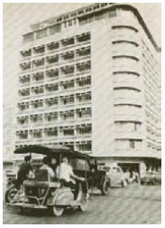

Tỉnh dậy đi, Cáo! Cô nghĩ cô có thể cảm nhận được cái mõm của cáo đang chọc vào thái dương cô. Cáo! Tỉnh dậy đi! Nhưng khi cô mở mắt ra, cô đang ở một mình và trong hình dạng con người.
Phía trên cô cong cong một mái vòm màn trướng, làm bằng vải xanh thẫm như bầu trời buổi đêm, và bộ váy mà cô mặc đối với cô cũng lạ lẫm như chiếc giường cô đang nằm trên. Đầu cô đau nhức, còn tay chân nặng nề như thể cô đã ngủ rất lâu rồi. Những hình ảnh tràn ngập trong đầu cô. Xe ngựa. Tàu lửa. Một cỗ xe với những chiếc gối vàng. Một người hầu đứng sau cánh cổng làm từ những bông hoa sắt, và...
Troisclerq.
Cô cảm thấy chóng mặt khi đứng dậy. Những bức tường cao phủ lụa vàng mờ, trên trần nhà là một vòng hoa bằng vữa trắng, chính giữa rủ xuống một ngọn đèn chùm pha lê đỏ... Từ bé cô đã mơ về những căn phòng như thế này. Nhưng cửa sổ bị đóng chấn song. Cô sờ tay lên cổ áo thêu ngọc trai. Cô không còn mặc bộ váy lông nữa.
Bình tĩnh nào, Cáo.
Nhưng trái tim cô lại chẳng muốn nghe điều đó.
Nhớ lại xem, Cáo! Một mê cung... Troisclerq đã dẫn cô qua đó. Đến một ngôi nhà với tường gạch màu xám phủ dây hoa thường xuân... Cô không thể nhớ thêm gì nữa dù có cố thế nào.
Anh ta đã trộn thứ gì vào nước đưa cô uống trên xe ngựa sao? Bột tiên nhí? Hay tình dược của một phù thủy? Nhưng cô chẳng cảm thấy chút yêu đương nào. Chỉ có nỗi giận dữ chính bản thân mình.
Anh ta đã đưa cô tới đâu? Chiếc váy lông của cô đâu rồi? Jacob...
Anh sẽ nghĩ thế nào đây? Rằng cô bỏ rơi anh chỉ vì nụ cười của Troisclerq và một bông hoa trên áo?
Cô túm chiếc váy rộng quá khổ lên. Chiếc váy đắt giá đủ để mặc đến một vũ hội của hoàng gia. Ai đã thay áo cho người, Cáo? Cô rùng mình. Thậm chí cả đôi giày đang mang cô cũng chưa từng trông thấy bao giờ. Cô tháo chúng ra và đi chân trần trên sàn gỗ đánh sáp chạm trổ hoa văn.
Cửa phòng không khóa.
Hành lang bên ngoài dẫn tới một tá những cánh cửa khác. Chúng đi về những hướng nào? Nhớ lại xem, Cáo!
Không. Trước tiên cô phải tìm lại bộ váy lông.
Cô tưởng vẫn còn cảm thấy bàn tay Troisclerq trên cánh tay mình. Thật dịu dàng. Thật ấm áp. Anh ta nghĩ gì chứ. Rằng anh ta có thể mê hoặc cô bằng một ngôi nhà thật to và một bộ váy mới? Có phải cô đã cười đáp lại anh ta quá ấm áp, hay bật cười quá thường xuyên vì những câu đùa của anh ta? Thật dễ bật cười với anh ta. Ánh mắt anh ta làm cô thấy mình xinh đẹp nhường nào. Có phải anh ta đã cố hôn cô? Phải. Những hình ảnh quay trở lại như ký ức của một kẻ xa lạ. Anh ta đã hôn cô. Trên xe lửa. Trong xe ngựa. Mi đã làm gì vậy, Cáo?
Quá nhiều cánh cửa.
Cô thử mở chúng, nhưng tất cả đều bị khóa. Những bức chân dung treo giữa những cánh cửa đều là chân dung phụ nữ. Cuối hành lang là một cầu thang. Cáo tin rằng cô vẫn nhớ nó. Cô đang định bước xuống thì một người hầu đi về phía cô trên những bậc thang rộng thênh thang. Chính là người đã mở cánh cổng sắt. Anh ta cao lớn đến nỗi phải giữ đầu cúi xuống giữa đôi bờ vai rộng
Căn phòng mà cô đã tỉnh dậy trong đó… bộ váy… những chân dung... người hầu trong áo đuôi tôm nhung đen. Như thể cô đã thua trong một trò chơi mà cô đã chơi hàng giờ liền trong rừng hồi còn bé.
“Ông chủ của anh đâu?”
Tay người hầu không nói lời nào tóm lấy cánh tay cô. Hai bàn tay anh ta phủ đầy lông nâu sẫm. Khắp nơi ở Lothringen có những câu chuyện về những nhà quý tộc được những con thú bị yểm bùa hầu hạ, vì chúng trung thành hơn bất cứ người trần nào.
Ngôi nhà to khổng lồ, nhưng họ không gặp một bóng người nào. Cánh cửa mà tay người hầu ngừng lại phía trước cũng làm từ gỗ đen sẫm như những bức tường trong phòng ăn mà anh ta vẫy Cáo vào. Những tấm rèm ren đỏ bắt ánh chiều tà rọi qua cửa sổ.
“Chào mừng đến tư dinh của tôi.” Troisclerq ngồi phía cuối một chiếc bàn dài. Đó là lần đầu tiên Cáo thấy anh ta không cạo râu nhẵn nhụi. Vùng da xung quanh miệng và cằm ánh màu xanh.
Hít thở nào, Cáo. Hít vào thở ra. Như cáo cái vẫn làm, khi Thần Chết nhìn trừng trừng vào cô ta.
Yêu râu xanh.
Trên bàn đặt mười chiếc đĩa. Chúng nằm trên bàn tượng trưng cho số nạn nhân.
Troisclerq mỉm cười với cô. Anh ta mặc một chiếc áo sơ mi hoa trắng như mọi khi. Thậm chí suốt những chuyến xe ngựa dài đẳng đẳng của họ, anh ta lúc nào cũng ăn vận đẹp đẽ như khi có người hầu đi cùng.
“Ngồi xuống đi.” Anh ta chỉ vào chiếc ghế phía bên trái đầy mời mọc. “Bộ váy hợp với cô lắm.”
Tay người hầu kéo ghế cho Cáo. Khi cô đã ngồi xuống trước chiếc đĩa trống không, cô nghĩ mình cảm nhận thấy tất cả những cô gái đã chết bên cạnh mình, ngồi trước mặt cô trên những chiếc ghế bọc nhung đen. Cô cố nhớ lại những khuôn mặt cô nhìn thấy trên những bức tranh.
Hít thở đi, Cáo. Hít vào thở ra.
Cô phải tìm được chiếc váy lông. Cô không thể rời đi mà không có chiếc váy.
Troisclerq nắm lấy bàn tay cô. Anh ta hôn lên những ngón tay cô thật dịu dàng, như thể đôi môi anh ta chưa bao giờ chạm vào thứ gì đẹp đẽ như thế.
“Thường thì tôi sẽ đưa những cô gái viếng thăm tư dinh của tôi một chùm chìa khóa để mở tất cả những cánh cửa trong nhà, với yêu cầu không được sử dụng một chiếc đặc biệt trong số đó. Đó là một truyền thống cũ của dòng họ tôi. Có lẽ cô đã nghe nói đến?” Anh ta đặt một chùm chìa khóa lên bàn.
Những chiếc chìa khóa đều được mạ bạc, ngoại trừ một chiếc. Nó nhỏ hơn những chiếc khác một chút và phần đầu khóa bằng vàng có hình dáng như một bông hoa.
“Vâng,” Cáo nói. “Vâng, tôi có nghe nói đến.”
“Tốt.” Troisclerq đẩy chùm chìa khóa đến bên cạnh chiếc đĩa của cô. “Không phải vì cô sẽ cần chìa khóa để tìm hiểu xem cái gì ẩn giấu đằng sau cánh cửa. Chắc chắn cáo cái có thể đánh hơi ra được.”
Dĩ nhiên rồi. Anh ta đã trông thấy chiếc váy lông. Cáo cố không tự hỏi liệu có phải anh ta đã thay nó cho cô không. Cô nắm chùm chìa khóa thật chặt, như thể nó có thể chứng minh rằng cô không sợ hãi chút nào. Tay người hầu đưa cho cô một ly rượu. Rượu có màu đỏ tựa như anh ta đã đổ đầy máu vào ly.
“Lần này ngươi bắt nhầm người rồi.”
Cô cảm nhận chiếc váy lạ lẫm trên làn da. Trang trí cho bức tranh treo trên tường của hắn, Cáo.
“Thật vậy ư? Tại sao?”
Người hầu mang thức ăn lên cho cô. Thịt vịt. Khoai tây nướng. Cô thấy đói.
“Tôi chưa bao giờ sợ chết.” Cáo nhìn vào mắt Troisclerq, để hắn ta thấy được rằng cô đang nói thật. Lẽ ra bóng đen ẩn trong đôi mắt đó đã có thể đánh động cô. Nhưng mi thích cái cách hắn ta nhìn mi, Cáo. Mi thích cải cách hắn ta thường xuyên nắm lấy cánh tay mi hay chạm vào bờ vai mi. Tất cả những điều Jacob cẩn thận tránh né mỗi ngày. Cô mang niềm khao khát dành cho hắn ta như một bí mật giấu dưới làn da, nhưng có lẽ Troisclerq đã đánh hơi thấy cô như đánh hơi thấy bộ lông dưới lớp váy áo, như một dấu máu trong rừng, dù cơn khát của hắn ta là dành cho một thứ khác. Vậy thì sao? Bất kể thứ gì ở cô đã hấp dẫn hắn ta, cô sẽ hiểu chết là thế nào. Cáo cái đã dạy cô điều đó. Cô sống cùng Thần Chết, trong vai thợ săn lẫn con mồi.
“Nhầm người sao? Ổ không,” Giọng Troisclerq mềm mại như rêu trong rừng. “Đừng lo lắng. Tôi tìm con mồi rất cẩn thận. Điều đó giữ cho tôi sống sót gần ba trăm năm nay rồi.”
Hắn gật đầu ra hiệu cho người hầu. “Cô sẽ cho tôi cái tối muốn. Như tất cả những cô gái khác. Thậm chí nhiều hơn tất cả bọn họ cộng lại.”
Tay người hầu mang một chiếc bình có quai đến đặt trên bàn. Ánh chiều tà lấp lánh rọi qua pha lê của chiếc bình như những mảnh của ngày đang tàn.
Troisclerq đứng dậy và chạm vào bờ vai trần của Cáo. “Nỗi sợ có rất nhiều màu, cô biết không? Màu trắng là màu bổ dưỡng nhất, nỗi sợ trước cái chết. Hầu hết mọi người đều sợ chết nhất. Nhưng tôi biết ngay rằng cô khác bọn họ. Điều đó chỉ càng làm cho cuộc đi săn hấp dẫn hơn mà thôi.” Troisclerq rải một nắm hoa úa tàn lên bàn. “Tôi đã để lại cho anh ta một dấu vết rất rõ ràng. Tôi chắc là anh ta đang trên đường đến đây. Cô không nghĩ vậy sao?”
Jacob.
Không. Cô sẽ quên tên anh đi, để Troisclerq không thể tìm thấy nó trong trái tim cô. Cô thấy mình nghẹt thở vì sợ hãi.
Dưới đáy bình một vài giọt màu trắng hiện ra.
Troisclerq dịu dàng vuốt má cô. “Mê cung bao xung quanh nhà tôi,” hắn thì thầm với cô, “chỉ để một mình tôi qua. Bất cứ ai khác sẽ lạc lối trong vô vọng. Bọn họ sẽ quên mất mình là ai, vì sao bọn họ đến đây, lang thang vô định giữa những bức tường cây lá cho đến khi đói ngấu. Cuối cùng bọn họ ăn lá cây độc và liếm sương đọng trên đá lát đường.”
Cáo hất ly rượu vào mặt hắn. Cô siết chặt ly đến nỗi nó vỡ vụn trong tay cô. Rượu nhuộm đỏ áo Troisclerq như máu đang chảy trên những ngón tay Cáo. Troisclerq đưa cô chiếc khăn ăn của hắn.
“Anh ta cũng yêu cô, cô biết không? Thậm chí cả khi anh ta cố không chú ý đến nó.” Không lời nào nghe dịu dàng hơn thế. Hắn đẩy ghế ra sau. “Đứng từ đây cô có thể nhìn toàn cảnh mê cung. Nếu một đám bồ câu bay lên từ đó, nghĩa là anh ta đã bị tóm trong đó. Ngoài Jacob ra tôi không chờ đợi vị khách nào khác.”
Đáy bình giờ đây đọng một lớp nước trắng như sữa.
Troisclerq đi dọc theo chiếc bàn dài. Ngang qua những chiếc đĩa trống không. “Có lẽ nó sẽ là một điều an ủi với cô,” hắn nói, trước khi khép cửa lại sau lưng. “Rằng nỗi sợ hãi cũng sẽ giết chết cô. Tình yêu là một thứ nguy hiểm chết người.”
Cô những muốn cắn nát cổ họng hắn ta. Bóp ngạt giọng nói như nhung ấy trong máu. Nhưng cáo cái đã hoàn toàn tuyệt vọng, và Celeste cũng thế.